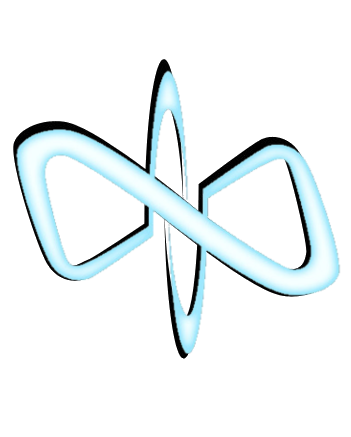

Novus
"We are Novus. We are enemies of your oppressors, the Hierarchy."
The original creators of what would become Novus were all but wiped out during a Hierarchy invasion, leaving behind a handful of sapient machines to rebuild. Since then Novus has been a constant thorn in the side of the Hierarchy, leading to the events of Universe at War: Earth Assault where they find things strangly amiss... Novus is lead by the Founder (the original surviving intelligence), Vertigo, and Mirable who stands out as the lone organic among an army of machines.